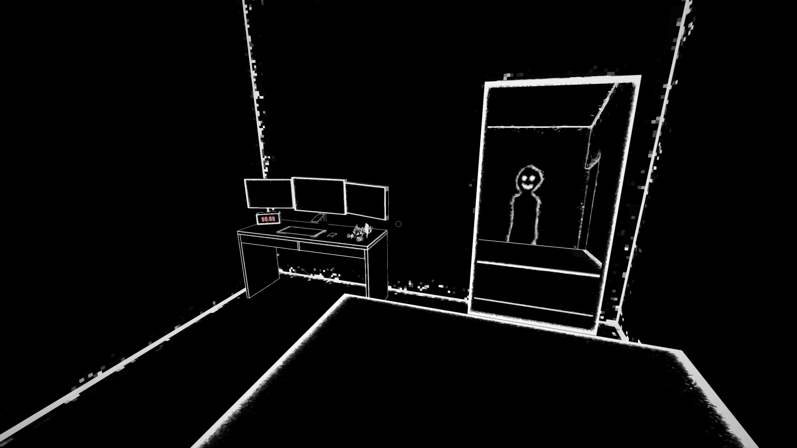

*cries in introvert*
Project Date: May 2024 - Current
If you are looking for an answer to why or what, I don't and won't have any special answer here for you. This project came from one night of random ideas and sudden motivation. Then I blinked and had a rougher version of the image above in front of me. From there I knew what the goal for the project was.
Farewell for now – Alex
Welcome back, humans, to Update 2. As I wanted to try and improve my blueprints and C++ skills, I swapped engines from Unity to Unreal 5. There's now an “Anxiety Volume”, when entered, will begin to increase the chromatic aberration and vignette effects as well pull the player’s position and camera’s rotation towards the centre of the volume (this is shown above using the player’s sprite for easy visuals + adds to creepiness.)
Anyway, thanks for reading. Until next time! - Alex